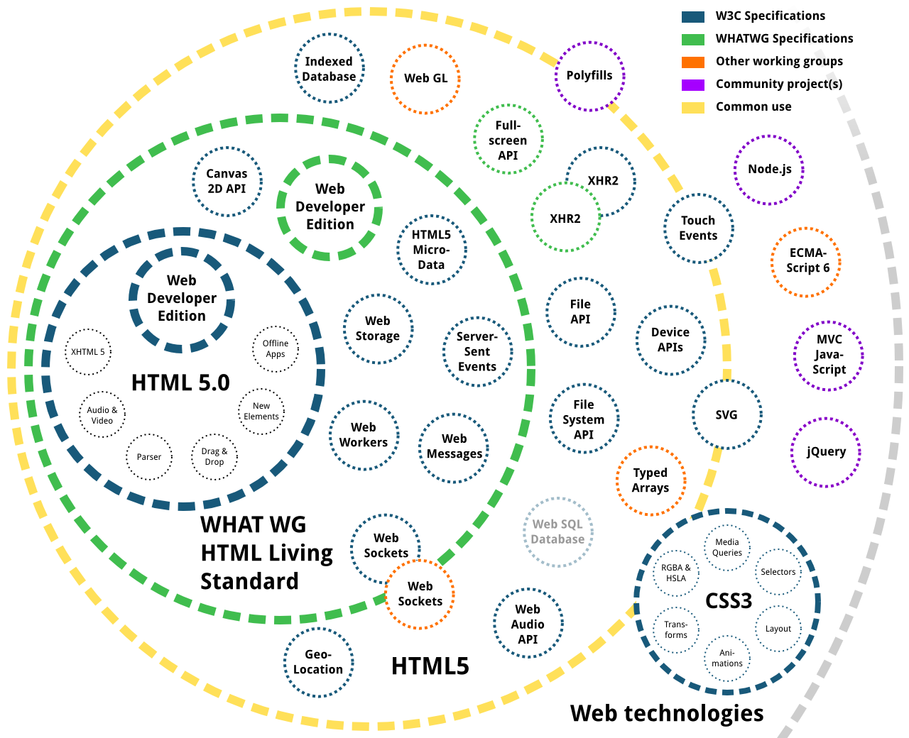

Are we There yet?
Progressive Responsive Design
Heads Up!
Responsive Design is only 3 Years Old.


A great Achievement, heh?
But what do we do?
We look at caniuse.com
We write jQuery Plugins
We write Prollyfills
And what should we do?
Get involved, start contributing.
Fucking help to move the web forward
Write Polyfills
Evolve Standards
Care about the basics.
Wait, we have our basics.
Gimme features!
STOP!
We don't have our basics yet.
Media Behavior
Care about
The Aspect Ratio?

Oh but we…
img, video {
max-width: 100%;
height: auto;
}
Ever tried that with an <iframe>?
Ever wanted to adjust width based on height?
Here is how you do the 'simple' way today:
Quite a mess, right?
object-fit
img, video {
object-fit: contain;
object-fit: cover;
object-fit: fill;
object-fit: scale-down;
}

Touch Events
Pointer Events
A bit history
- The first modern touch device came out
- Touch Events were introduced in WebKit
- Microsoft isn't pleased with TE
- MS + W3C develop Pointer Events
- MS and Firefox OS introcude PE to public
- WebKit and Blink going separate
- The mess had been created…
Written a touch application recently?
Boo, that isn't funny since both event types are used right now.
Rescue to pointer.js
Thank god someone has written an abstraction.
But there is way to go for Blink & WebKit. At least, implementation has been started recently.
Bugvoting
This Blink-task needs to be finished soon!
Finished? No way!
- CSS Media Query variables
- "HTML Templating" aka Web Components
- Resource Priorities (lazyload Attribute)
- …to be continued.
You expected sth., right?
#respimg
Ø web page is 1.6MB
Ø 65% are images
1MB on a 320px smartphone?
72% could be saved here
Ships tomorrow!

Supported in WebKit Nightly already;
Blink to follow soon.
Still, <picture> needs to fight its way through implementors.
Help and participate:
- responsiveimages.org
- GitHub
- IRC: #respimg
Isn't this a CMS Conf?
Backend is also involved
RespImg Backend?
- Auto-Generate Resolutions
- Offer Art-Direction Multi-Upload
- Create a Manager usable for Art-Direction
Un-Libraryfy
A content management system should be what it is called.
Backend == Frontend
Of course not. But what a user sees of a Backend is a frontend.
Use what you have
- Use native elements (e.g. forms)
- Be progressive
- Care about performance in the Back-Frontend
Evolve the Web!
- First, move the web forward.
- Then, test the web forward.
- and now start enjoying the second day of MODXpo Europe 2013!